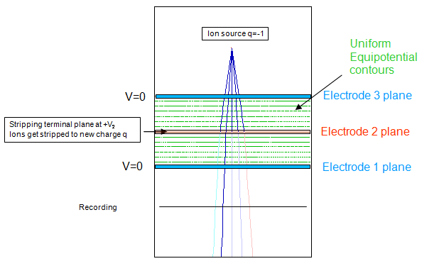
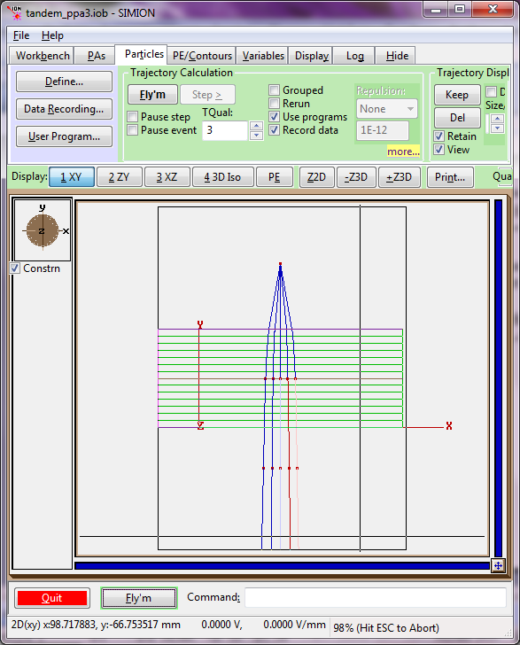
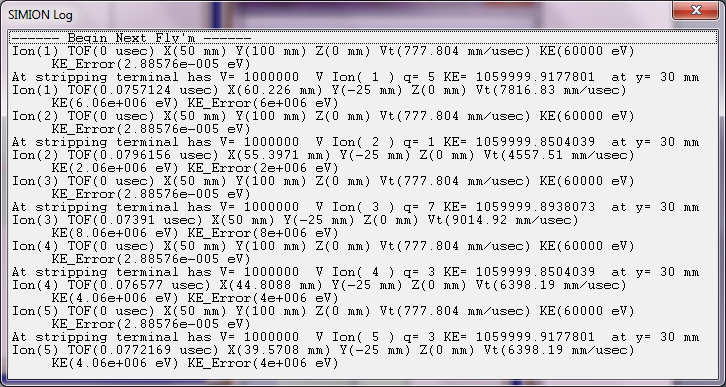

Purpose
This example demonstrates the operation of a Tandem Van De Graff Accelerator, where negative ions are accelerated, stripped of two more more electrons upon passing through a thin foil, and then accelerated again as positive ions [1]. This is a good example of changing the charge of a particle in the middle of a flying and is a starting point for simulating the effects of particles traversing foils.
Principle of Acceleration in a Tandem Van De Graff Accelerator

There are three parallel plates with the central one at the user selected voltage +V2. Ions start at the source y = +100 mm with q = -1 e and mass = 19.138 u (Fluorine Ions) and K0 = 60 keV at top moving in the negative y-axis direction (down). They go through the top plate at 0 V and get accelerated to the terminal (middle plate) at +V2, gaining K12 = e V2. At the terminal they become positively charge-stripped (by a foil in a real tandem) to a user selected charge state +n e, then continue on accelerated down to the 3rd plate (at 0V), gaining another K23 = n e V2 going through it. Their final kinetic energy should be KE = K0 + K12 + K23 = K0 + (1+n) e V2. The terminal voltage V2 is set initially to 1 MV, typical of MV tandem operating voltages.
Different color trajectories are used to show the different charge states of the ions. These charge states are randomly selected from a Gaussian distribution around the central charge (user defined), here set at q=+5.
Upon exiting the last plane at V = 0 V, the ion has energy KE = K0 + (1+n) e V2. Its parameters are recorded at the recording plane Y = -25 mm. This can be set via the Data Recording screen.
The following figure shows a beam of 5 particles of the same initial energy 60 keV but with different emission angles (-80, -85, -90, -95, -100 degrees), as user specified in the Particles Define screen. The angles have been exaggerated for the sake of illustration.


Typical screen output of the fly'm and recording log are shown above. For demonstration purposes, we have used the Omit relativistic effects option (in SIMION 8.1) so that the ideal behavior without relativity is more easily seen.
Files in this demo:
- README.html - Description of example
- tandem_ppc3.iob - workbench
- tandem_ppc3.lua - user program that simulates the effect of the foil changing particle charges.
- ppc3.gem - Geometry definition file used to generate ppc3.pa#. This defines a uniform electric field between the three parallel plates used to accelerate the ions. Note that in this example the field is ideal (no fringing fields), as generated by the 2D GEM file definitions.
- superarray.gem - Geometry definition file used to generate superarray.pa. This is an empty array enclosing the entire system and is not normally needed unless your user programs need to use initialize and terminate segments outside of the main ppc3 array (see SIMION FAQ: My initialize and terminate segments are not executed. )
- testplanelib.lua - test plane library (taken from Example: Test Plane), used by tandem_ppc3.lua.
How to run this example:
- 1. View tandem_ppc3.iob. (Click View on main screen and select the tandem_ppc3.iob file.) If this is your first time using the example, you will be asked to refine (confirm that and press Refine).
- 2. Fly ions. (Click the Fly'm button.)
- It is recommended that you examine the various 2D/3D views, the PE view, and the output in the Log tab. Check that the energy gain matches theory (discussed above). Note that SIMION by default includes relativistic effects, so classical theory will be more closely matched is you use the option in SIMION 8.1 to Omit relativistic effects. Of course, in the case of (1+n) MeV Fluorine ions--as depicted here--relativistic effects are negligible.
See Also
- [1] Wikipedia:Van_de_Graaff_generator
- [2] Tandem Van de Graaff facility at Brookhaven National Laboratory
Source
This original example (README/ppc3/tandem_ppc3 files) are (c) 2011 Theo J.M. Zouros and adapted and distributed by permission under the terms of SIMION 8 or above. testplanelib.lua is part of SIMION 8.0.